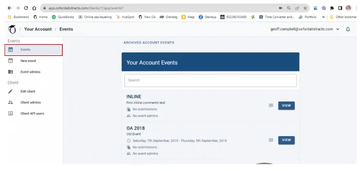
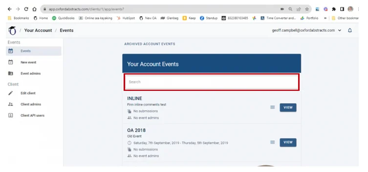
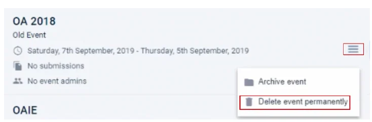
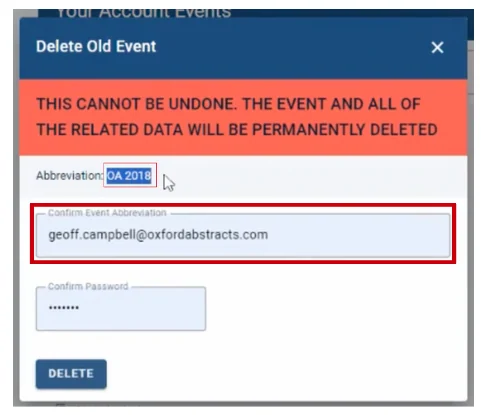
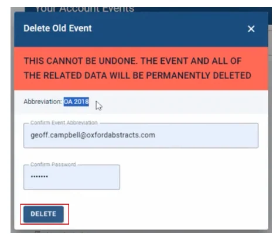
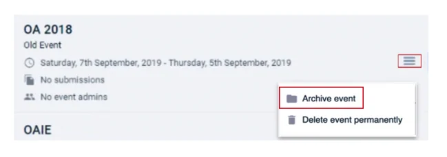
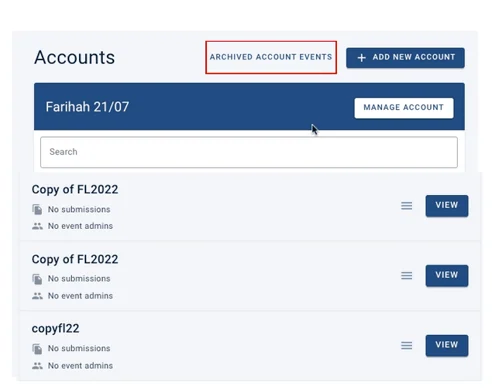
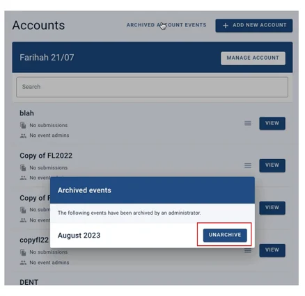

Permanently delete or archive your event
In this article you will learn how to permanently delete, archive your event and unarchive your event.#
Please note: This information is for event admins ONLY!
Watch how to permanently delete your event in this short video below.
Or scroll down to read the instructions.
From your client dashboard, click on Events in the left-hand column.

On the next screen, find the event you wish to permanently delete by scrolling down the list or using the search bar at the top.

When you have found the event, click on the three lines to the right of it and select Delete event permanently.

On the next screen that follows, you’ll need to add the event abbreviation into the Confirm Event Abbreviation box and your password into the Confirm Password box.
The event abbreviation can be found above this box.

Once you have done the above actions, you click on the delete button and your event will be permanently deleted.

How to archive your event
From your client dashboard, click on Events in the left-hand column.
On the next screen, find the event you wish to archive by scrolling down the list or using the search bar at the top.
When you have found the event, click on the three lines to the right of it and select Archive Event.

How To Unarchive Your Event
From your client admin dashboard you will see a list of events you are admin too.
At the top of the list click on the tab titled Archived Account Events.

Thiswill show a list of events that have been archived. Click on the Unarchive button next to the event you want to unarchive.

If you need further assistance, please contact our Support Team via our Contact Form.
Common questions#
How long do you keep the data for an event?#
Oxford Abstracts will store conference data for at least a year after the conference start date unless the customer deletes the event. This allows customers to look back at a previous year’s conference when setting up a new conference.
In order to comply with GDPR regulation, events will be deleted 6 years after the start date of the conference. All records of deleted events will be removed from Oxford Abstracts servers and clients should ensure that they have kept suitable backups before the 6 years have elapsed.
Did this page solve it?
Thanks — this helps us fix it.
Didn't solve it? Ask our support team
No question is too small, and there's no charge for asking. Raise a ticket and someone who knows the software will pick it up.